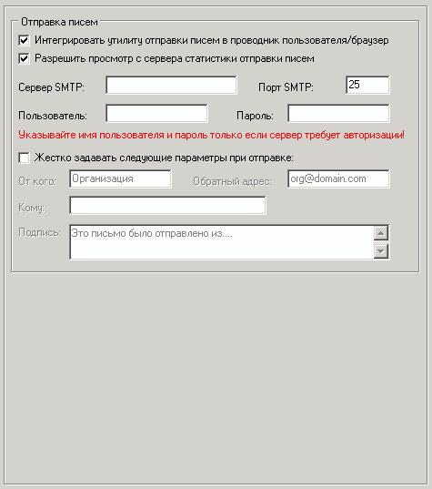

ќтправка писем
”казывайте им€ пользовател€ и пароль дл€ подключени€ к SMTP-серверу только в том случае, если он требует авторизации!
–екомендуетс€ использовать SMTP-сервер вашего провайдера.
≈сли использовать попул€рный бесплатный сервер smtp.mail.ru, то авторизаци€ требуетс€ (указывайте ваш логин и пароль €щика) и в качестве обратного адреса всех писем всегда должен быть указан существующий e-mail на @mail.ru(!). ¬ этом случае поможет опци€ "∆естко задавать параметры при отправке".
ƒл€ сервера smtp.yandex.ru требуетс€ обратный адрес на @yandex.ru и об€зательна€ авторизаци€ с логином и паролем этого €щика.
≈сли нужно жестко задавать только подпись, тогда пол€ "ќт кого" и "ќбратный адрес" нужно оставить пустыми.